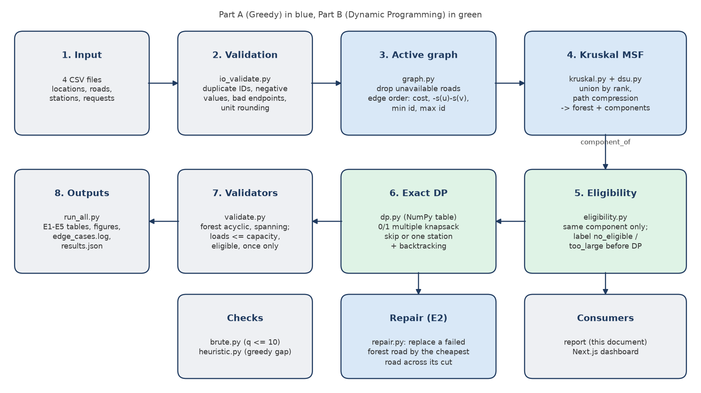
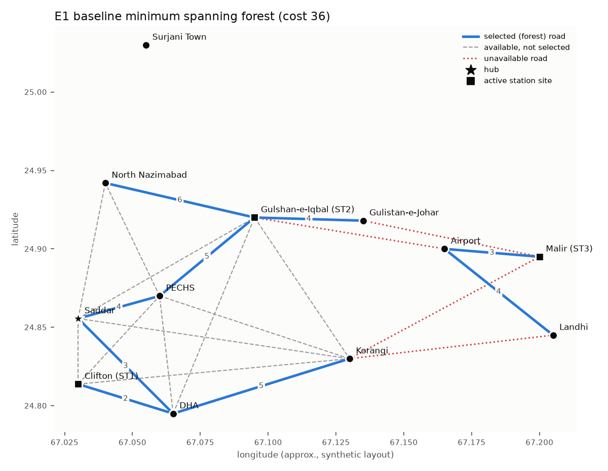
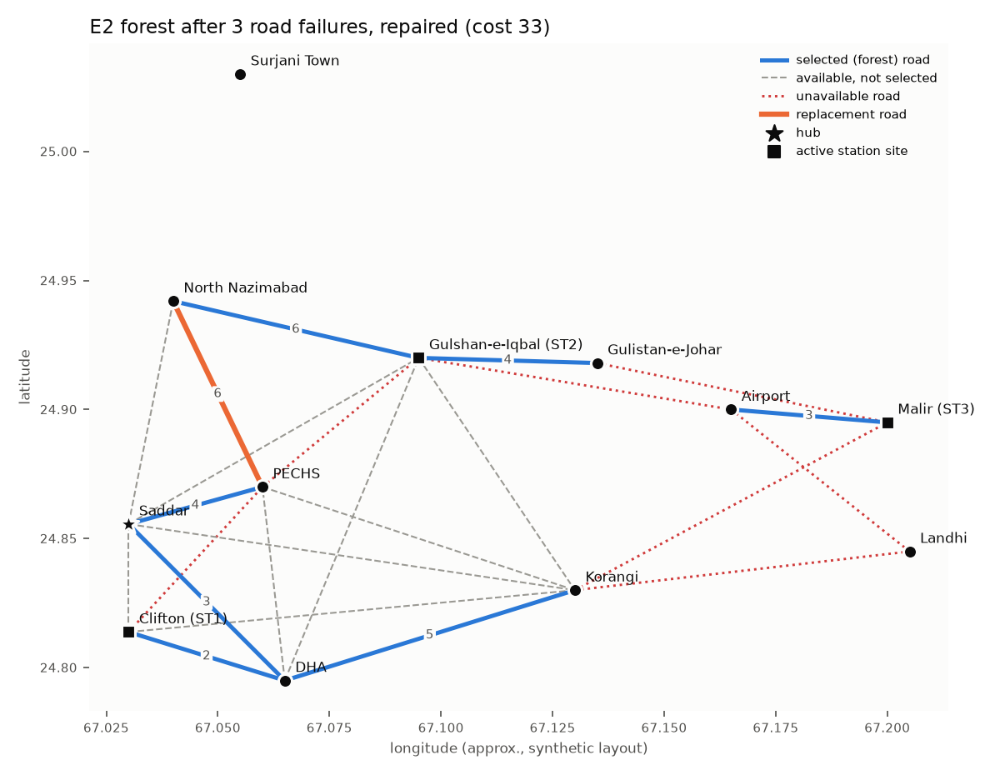
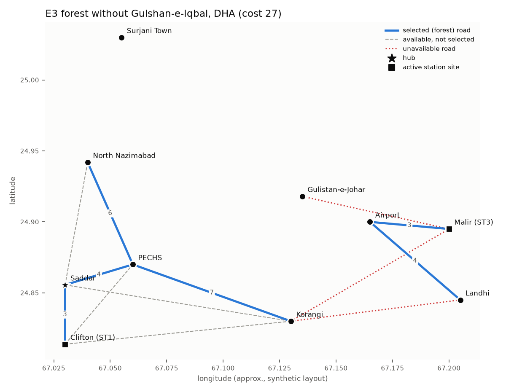
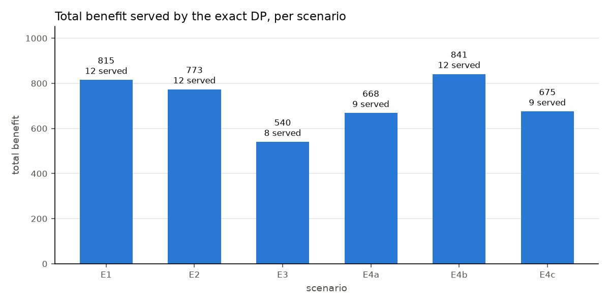
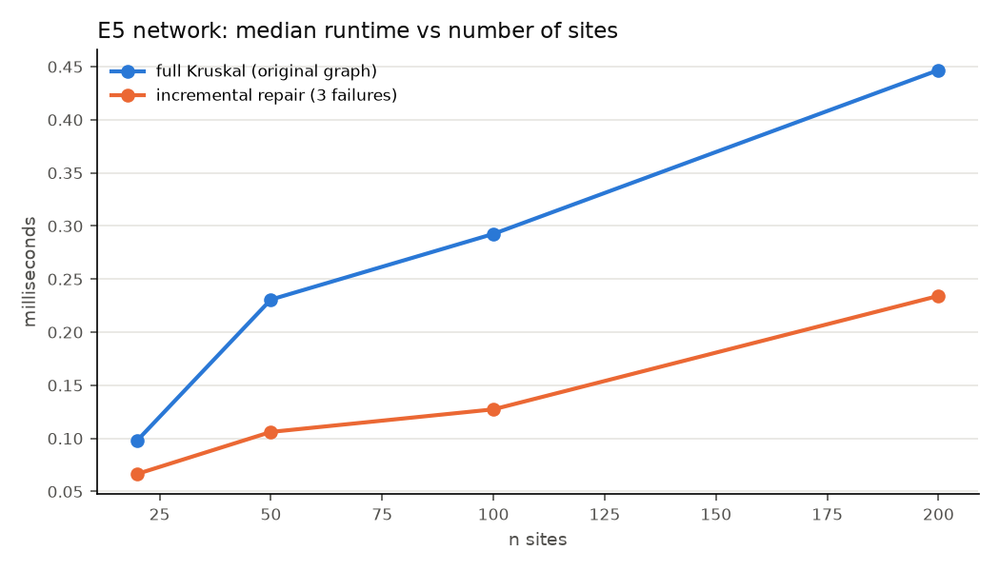
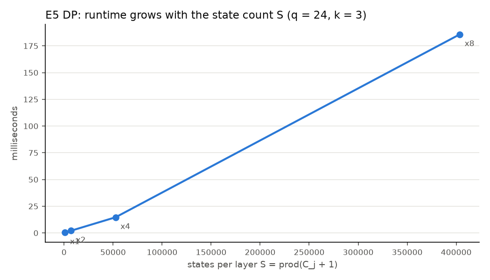
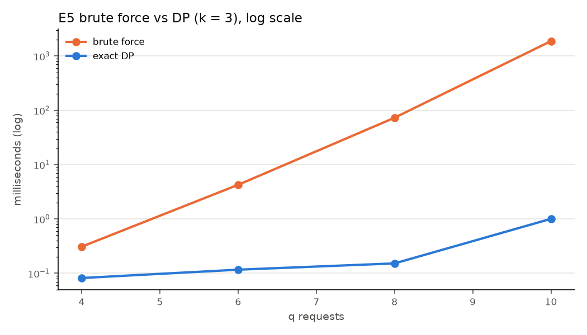

NED University of Engineering and Technology
Department of Computer Science and Information Systems
CT-363 Design and Analysis of Algorithms
Complex Engineering Problem (CEP) Report
Smart EV Charging Station Planning and Energy Allocation System
Greedy minimum spanning forest + exact multi-knapsack dynamic programming on the synthetic Karachi-EV-12 dataset
Submitted by
| Student name | Roll number |
|---|---|
| Sarim Khan | CT-24266 |
| Muhammad Saraib | CT-24255 |
| Danish Meraj | CT-24268 |
| Muhammad Maaz Ali | CT-24265 |
Course instructor: Miss Tooba Shaikh
Date: 01 November 2026
Faculty signature: ______________________
This report presents a decision-support prototype that plans an electric-vehicle (EV) charging network and allocates limited charging energy, using two algorithmic paradigms. Part A uses a greedy algorithm, Kruskal's algorithm with a Union-Find (disjoint-set) structure, to build a minimum spanning forest over the available roads between candidate sites; unavailable roads are filtered before sorting, equal-cost ties are broken deterministically by site severity and IDs, and the forest is repaired incrementally after road failures. Part B uses exact dynamic programming for the 0/1 multiple-knapsack problem: each charging request is assigned to at most one eligible station, where a station is eligible only if it lies in the same connected component as the request's origin. On the synthetic Karachi-EV-12 dataset (12 sites, 24 roads of which 4 are unavailable, 3 active stations and 24 requests) the forest costs 36 over 3 components, and the DP serves 12 requests for a total benefit of 815 using all 28 capacity units. The DP agreed with brute force on 200 of 200 random instances, and the incremental repair matched full Kruskal in cost on every tested graph. Sensitivity experiments cover road failures, removal of the two highest-severity sites, capacity cuts, extra demand and scaling up to 200 sites. All values are model outputs on synthetic data.
Electric-vehicle adoption requires charging infrastructure that is both cheap to connect and efficiently used. A planner must connect candidate charging sites at low cost while some roads are closed, and must then decide which charging requests each station serves when total demand exceeds the available energy. These goals conflict: the cheapest network does not maximise coverage, and serving one large request can block several smaller ones.
The project solves the two problems on one dataset and links them through graph connectivity: the network stage decides which stations a request can reach, and the allocation stage decides which reachable requests are served. The system does not choose where to build stations (facility location); candidate sites are given. All data are synthetic and labelled as such.
The CT-363 CEP sheet describes a flood-relief scenario. The team used EV charging as its own case study; Table 1 maps the two so that every CEP requirement has a counterpart.
Table 1. Mapping between the CEP flood-relief scenario and this project.
| CEP scenario | This project |
|---|---|
| Village | Site (candidate charging location) |
| Road / submerged road | Road / unavailable road |
| Emergency operations centre (EOC) | Hub (Saddar) |
| Truck | Charging station |
| Relief item | EV charging request (one indivisible item) |
| Lives impacted | Benefit |
| Bounded / multiple knapsack | 0/1 multiple knapsack (each request is one indivisible item) |
Minimum spanning trees. The minimum spanning tree problem dates back to Borůvka (1926). Kruskal (1956) proposed scanning edges in non-decreasing weight order and keeping an edge whenever it joins two different trees; Prim (1957) grows a single tree from a start vertex. Both are justified by the cut property: the lightest edge crossing any cut that respects the current partial solution is safe [1]. On a disconnected graph Kruskal naturally returns a minimum spanning forest, one tree per component, whereas Prim must be restarted per component.
Disjoint sets. Kruskal's efficiency depends on fast connectivity queries. With union by rank and path compression, a sequence of m operations on n elements runs in O(m α(n)) time, where α is the inverse Ackermann function (Tarjan, 1975) [1][4]. α(n) ≤ 4 for any practical n.
Dynamic MST. Maintaining an MST under edge deletions is a studied problem with sophisticated structures (Frederickson, 1985; Holm, de Lichtenberg and Thorup, 2001) [5][6]. This project deliberately uses a simple repair (find the cut created by a deleted tree edge and add the cheapest crossing edge), which is correct but not asymptotically optimal, and measures it rather than assuming a speed-up.
Knapsack problems. The 0/1 knapsack problem is NP-hard but solvable in pseudo-polynomial time by dynamic programming over capacity values [1][7]. The multiple knapsack problem, with several capacities and each item placed in at most one knapsack, is strongly NP-hard in general; exact methods include branch-and-bound and DP over the vector of remaining capacities, whose state space is the product of (C_j + 1) and therefore grows exponentially with the number of knapsacks [7][8]. This motivates the project's restriction to k = 3 stations (k = 4 in the stress run).
Notation. n sites, m roads, q requests, k stations, used consistently in code and text.
Let G = (V, E) be an undirected graph with |V| = n sites and |E| = m roads. Road e = (u, v) has cost w(e) ≥ 0 and an availability flag; site v has a severity s(v). Let E_active be the available roads between active sites. The goal is a spanning forest F ⊆ E_active of minimum total cost that spans every connected component of (V, E_active). Roads are ranked by the key
key(e) = ( w(e) ascending, s(u)+s(v) descending, min(u,v) ascending, max(u,v) ascending )
Severity only orders roads of equal cost, so it never changes the minimum total cost; it selects one forest among equal-cost alternatives. Kruskal therefore does not maximise severity coverage.
Request i has an integer energy requirement w_i (units) and benefit b_i; station j has capacity C_j. Let E_i be the set of active stations in the same component as request i's origin, and x_ij = 1 if request i is assigned to station j.
maximise Σ_i Σ_j b_i · x_ij
subject to Σ_j x_ij ≤ 1 for every request i (at most one station)
Σ_i w_i · x_ij ≤ C_j for every station j (capacity)
x_ij = 0 if j ∉ E_i (eligibility)
x_ij ∈ {0, 1} (indivisible requests)
Units. 1 unit = 10 kWh. Request energy is rounded up (a request is never under-served) and station capacity is rounded down (a station never promises energy it lacks). Benefits are integers from 10 to 100, so the DP never compares floating-point values. Time-decay of benefit is off, because the CEP states that values are constants.
Assumptions. Costs and capacities are known, non-negative inputs; the graph is undirected; each request consumes its full requirement; charging time, queues, prices, grid limits and safety risk are discussed but not optimised.
Table 2. Conflicting engineering requirements and how each was resolved (WP2).
| Conflict | Resolution in the design | Evidence from the results |
|---|---|---|
| Connection cost vs coverage | Kruskal minimises total cost only; components are reported by name and maximum coverage is never claimed. | Baseline forest cost 36 leaves 3 components; Surjani Town stays unconnected. |
| Safety vs low cost | Unavailable roads are a hard filter applied before sorting. | Cheapest road overall (R21 Korangi–Landhi, cost 2) is unavailable and never selected. |
| Capacity vs demand | Hard capacity constraints; maximise total benefit; every unserved request gets a reason. Fairness is not guaranteed. | 12 of 24 served; 9 lost to capacity competition. |
| Benefit vs fairness / urgency | Objective is the sum of declared benefits; ties prefer serving more requests. Urgency would enter only through a stated benefit formula. | Greedy benefit-per-unit baseline reaches 781 vs DP 815. |
| Time-decay vs computation | Decay is off; if enabled, b_i(t) = b_i·e^(−λt) would be fixed per run so the DP stays exact. | All runs use constant benefits. |
| Exactness vs scalability | Exact dense DP limited to k = 3 stations (stress k = 4); network stage scales separately. | States per layer grow from 1,040 to 403,617 when capacities are multiplied by 8 (E5). |
The implementation is a modular Python pipeline (Figure 1). Each module has one job and is unit-tested on its own; run_all.py runs the whole pipeline for every experiment, validates every result and writes all tables, figures and results.json, which both this report and the dashboard read.

Table 3. Source modules.
| Module | Responsibility |
|---|---|
io_validate.py | Load CSVs into typed records; reject duplicate IDs, negative values, invalid endpoints, self-loops and unit-rounding errors. |
graph.py | Active graph (drop unavailable roads and removed sites); the single edge order edge_key; BFS. |
dsu.py | Union-Find with union by rank and path compression. |
kruskal.py | Kruskal MSF with full trace; components with site names; hub and isolated flags. |
repair.py | Incremental repair of the forest after road failures. |
eligibility.py | Same-component eligibility and pre-DP unserved labels. |
dp.py | Exact 0/1 multiple-knapsack DP on a dense NumPy table with backtracking. |
brute.py, heuristic.py | Brute-force checker (q ≤ 10); greedy benefit-per-unit baseline. |
validate.py, pipeline.py | Independent result validators; glue code and experiment edits. |
run_all.py | Experiments E1–E5, verification, edge-case log, figures, results.json. |
MAKE-SET(x): parent[x] <- x; rank[x] <- 0
FIND(x):
root <- x
while parent[root] != root: root <- parent[root]
while parent[x] != root: // path compression
next <- parent[x]; parent[x] <- root; x <- next
return root
UNION(a, b):
ra <- FIND(a); rb <- FIND(b)
if ra = rb: return FALSE // same set: would close a cycle
if rank[ra] < rank[rb]: swap(ra, rb) // union by rank
parent[rb] <- ra
if rank[ra] = rank[rb]: rank[ra] <- rank[ra] + 1
return TRUE
KRUSKAL-MSF(V, E, s):
A <- { e in E : e.available } // filter BEFORE sorting
sort A by key(e) = (w(e), -(s(u)+s(v)), min(u,v), max(u,v))
for v in V: MAKE-SET(v)
F <- empty; cost <- 0
for e = (u, v) in A: // invariant: F acyclic, DSU sets = trees of F
if UNION(u, v): F <- F + {e}; cost <- cost + w(e)
else: record e as "rejected: cycle"
return F, cost, DSU groups (each named by its sites)
REPAIR(F, E_active, failed, s):
S <- E_active - failed // surviving roads
for e = (u, v) in failed:
if e not in F: continue // forest still valid
F <- F - {e}
C1 <- BFS(u, F); C2 <- BFS(v, F) // the two sides of the cut
best <- argmin over x in S with one end in C1 and the other in C2 of key(x)
if best exists: F <- F + {best}
else: keep the split // the component really broke
return F
ELIGIBILITY(requests, stations, comp): // comp = site -> component label
for each request r:
if r.origin is removed: reason[r] <- origin_site_removed
E_r <- { active j : comp[j.site] = comp[r.origin] }
if E_r empty: reason[r] <- no_eligible_station
else if r.units > max_{j in E_r} C_j: reason[r] <- too_large_for_any_eligible_station
else: add r to the DP input
MULTI-KNAPSACK-DP(items 1..q, C[1..k]):
// DP[i][c] = best (benefit, served) using items 1..i with budgets c = (c_1..c_k)
DP[0][c] <- (0, 0) for every c // base case
for i <- 1 to q:
for every c:
DP[i][c] <- DP[i-1][c]; choice[i][c] <- SKIP
for each eligible j in ascending ID with c_j >= w_i:
cand <- (b_i, 1) + DP[i-1][c with c_j - w_i]
if cand > DP[i][c] (lexicographic): DP[i][c] <- cand; choice[i][c] <- j
c <- C // backtrack from the full budget
for i <- q downto 1:
if choice[i][c] = j != SKIP: assign i -> j; c_j <- c_j - w_i
return DP[q][C], assignment
In the code the pair (benefit, served) is stored as one integer, benefit·(q+1) + served; because 0 ≤ served ≤ q, integer order equals lexicographic order. Each layer is computed with NumPy slices: for station j, the states with c_j ≥ w_i read layer i−1 at c_j − w_i.
BRUTE-FORCE(items, C): // only for q <= 10
best <- (0, 0)
for each choice vector in product over i of ({SKIP} + eligible(i)):
if every station load <= C_j and (benefit, served) > best: best <- this
return best
GREEDY-BASELINE(items, C): // bonus; no approximation ratio claimed
sort items by b_i / w_i descending (exact fractions)
for each item: give it to the eligible station with the most remaining space that fits
Suppose Kruskal accepts e = (u, v). Then u and v are in different DSU sets; let C be u's set. Every road ranked before e that crosses the cut (C, V∖C) was already scanned and would have joined two different sets, so it would have been accepted and C would not separate u from v. Hence e is the lowest-ranked road crossing the cut. Exchange argument: let T be an optimal spanning forest that does not contain e. Adding e to T creates a cycle that crosses the cut at another road f with w(f) ≥ w(e). T − f + e is a spanning forest with cost no greater than T, so it is also optimal and contains e. Therefore every accepted road is safe.
After a safe road e is added, contract its endpoints into one vertex. If F' is an optimal spanning forest of the contracted graph, F' ∪ {e} is optimal for the original graph; otherwise a cheaper completion F'' would give a cheaper forest F'' ∪ {e}, contradicting the optimality of F'. Induction over the accepted roads proves that Kruskal returns a minimum spanning forest. If (V, E_active) is disconnected, no road crosses between components, so the argument applies inside each component and the result is one minimum tree per component (n − c roads for c components). No connection is ever invented.
Invariant: every DSU set equals the vertex set of one tree of F. It holds initially (singletons). UNION merges two sets exactly when a road joining two trees is added, so the invariant is preserved. A road whose endpoints share a root lies inside one tree and would close a cycle, so it is rejected. Path compression and union by rank change only the shape of the parent trees, never the sets.
Deleting a tree road e splits its tree into C1 and C2; all other forest roads lie inside C1 or C2 and remain part of an optimal forest of the new graph. Any spanning forest of the new graph must cross (C1, C2) with exactly one road if a crossing road exists; by the cut property the cheapest crossing survivor is safe. If none exists the component has genuinely split. Other failed forest roads lie inside C1 or C2, so excluding all failed roads from the candidates up front changes nothing. A failed road outside F leaves F optimal. The validator additionally checks equal cost against full Kruskal on the same modified graph.
Consider an optimal solution for the subproblem (i, c). Request i is either skipped or placed in exactly one eligible station j with c_j ≥ w_i. Removing it leaves a feasible solution of subproblem (i−1, c) or (i−1, c − w_i·e_j) respectively, and that remainder must be optimal for its subproblem; otherwise replacing it with a better one would improve (i, c). The recurrence takes the maximum over exactly these cases, so by induction on i every DP[i][c] is optimal and DP[q][C] is the optimum. Because each request is decided in one layer as either SKIP or a single station, no request can be assigned twice, which is why the design does not run k independent knapsacks. Backtracking follows the stored choices from (q, C) and reproduces a solution of exactly value DP[q][C]; the validator re-adds the benefits to confirm this.
Ties are broken by more requests served (encoded in the pair), then by checking SKIP first and stations in ascending ID with a strict comparison, so results are deterministic. Brute force evaluates the same objective over all (k+1)^q assignments; it agreed with the DP on (benefit, served) for 200 of 200 random instances, including zero-capacity stations and too-heavy items.
Kruskal. Filtering is O(m); sorting is O(m log m); n MAKE-SET operations are O(n); at most m UNION/FIND pairs cost O(m α(n)) amortised. Hence T(n, m) = O(n + m log m + m α(n)) = O(m log m) for a non-trivial graph, and since m ≤ n², log m = O(log n). Space is O(n) for the DSU plus O(m) for the sorted edges: O(n + m).
Repair. Each failed forest road needs two BFS traversals of the forest (O(n)) and one scan of the surviving roads (O(m)), so r failures cost O(r(n + m)); with r = 3 this is O(n + m). It is a simple repair, not a dynamic-MST structure, so it is not guaranteed to be faster than re-sorting; E5 measures both.
Eligibility. O(q k). DP. With S = Π_j (C_j + 1) states per layer, each of q requests tries SKIP plus at most k stations per state: time O(q k S). Keeping all q + 1 layers for backtracking needs space O(q S). The bound is pseudo-polynomial (it depends on capacity values) and exponential in k. For the baseline, S = 1,040 (= 13 × 10 × 8), with 21 requests entering the DP, giving 22,880 states and a 205.9 KB table; the k = 4 stress run has S = 6,240.
Brute force. (k+1)^q assignments, each checked in O(q + k): O((k+1)^q (q + k)). For q = 24 and k = 3 this is 4^24 ≈ 2.8 × 10^14 assignments, which is infeasible; for q = 10 it is 4^10 = 1,048,576, which is why brute force is restricted to q ≤ 10. Greedy baseline. O(q log q + q k).
Table 4. Complexity summary.
| Algorithm | Time | Space |
|---|---|---|
| Union-Find (m operations) | O(m α(n)) amortised | O(n) |
| Kruskal MSF | O(m log m) | O(n + m) |
| Incremental repair (r failures) | O(r (n + m)) | O(n + m) |
| Eligibility | O(q k) | O(q k) |
| Multi-knapsack DP | O(q k S), S = Π(C_j + 1) | O(q S) |
| Brute force | O((k+1)^q (q + k)) | O(q + k) |
| Greedy baseline | O(q log q + q k) | O(q + k) |
The system is written in Python (tested with Python 3.14.7); all algorithms are hand-written, with NumPy used only for the DP table. networkx appears only in the tests, as an independent cross-check of Kruskal's cost. pytest runs the test suite, matplotlib draws the figures, and the dashboard is a Next.js web application that reads the same results.json.
Site names are real Karachi areas, but every cost, severity, capacity, demand and benefit is synthetic. A seeded generator (scripts/gen_dataset.py, seed 363) writes the CSV files deterministically, and a test asserts every design property: 4 unavailable roads that are exactly the links between the main and the cut-off components, a cheap triangle, several equal-cost groups, an unavailable road cheaper than selected roads, real over-demand in each component and two too-heavy requests.
Table 5. Sites of the Karachi-EV-12 dataset (severity and role).
| ID | Site | Severity | Role |
|---|---|---|---|
| S01 | Saddar | 6 | hub; main component |
| S02 | Clifton | 8 | ST1 125 kWh = 12 units; main component |
| S03 | DHA | 9 | main component |
| S04 | PECHS | 7 | main component |
| S05 | Gulshan-e-Iqbal | 10 | ST2 95 kWh = 9 units; main component |
| S06 | Gulistan-e-Johar | 7 | main component |
| S07 | North Nazimabad | 6 | main component |
| S08 | Korangi | 5 | ST4 54 kWh = 5 units (inactive; stress run only); main component |
| S09 | Malir | 5 | ST3 78 kWh = 7 units; cut-off component |
| S10 | Airport | 4 | cut-off component |
| S11 | Landhi | 3 | cut-off component |
| S12 | Surjani Town | 2 | isolated |
Requests: 24 in total, 16 in the main component, 7 in the cut-off component and 1 at an isolated site; total demand 77 units against 28 units of active capacity. The full road list is in Appendix B and the full request list with outcomes is in Section 9.2.
Input validation rejects duplicate IDs, negative costs, capacities, energy or benefit, unknown or identical road endpoints and unit values that break the rounding rule. Every experiment passes its results through independent validators (forest acyclic, spanning every component, no unavailable road, cost recomputed; every request at most once, every load within capacity, every assignment eligible, benefit recomputed). The automated test suite has 337 tests, covering every mandatory case: disconnected graph, over-demand, too-heavy request, unavailable edge, cycle prevention, equal-cost edges, duplicate-assignment guard, zero requests and zero capacity, incremental failure, plus DP-versus-brute-force agreement and repair-versus-full-Kruskal agreement on random instances.
pip install -r requirements.txt python -m pytest python run_all.py python scripts/build_report_assets.py python scripts/build_report.py
Timings use time.perf_counter and report the median of 20 runs in one Python process on Windows-11-10.0.26300-SP0, Intel64 Family 6 Model 154 Stepping 3, GenuineIntel, Python 3.14.7, NumPy 2.4.6. They vary between machines and runs; all counts, costs and benefits are deterministic.
Every number and figure in this section is generated by run_all.py from the submitted code.
4 unavailable roads (R21 Korangi–Landhi, R22 Korangi–Malir, R23 Gulshan-e-Iqbal–Airport, R24 Gulistan-e-Johar–Malir) are removed before sorting, leaving 20 roads. Table 6 is the Kruskal trace in sorted order.
Table 6. Kruskal trace (sorted edge order) on the baseline graph.
| # | Road | Cost | s(u)+s(v) | Decision |
|---|---|---|---|---|
| 1 | R01 Clifton–DHA | 2 | 17 | accept |
| 2 | R02 Saddar–DHA | 3 | 15 | accept |
| 3 | R03 Saddar–Clifton | 3 | 14 | reject (cycle) |
| 4 | R19 Malir–Airport | 3 | 9 | accept |
| 5 | R04 Gulshan-e-Iqbal–Gulistan-e-Johar | 4 | 17 | accept |
| 6 | R05 Saddar–PECHS | 4 | 13 | accept |
| 7 | R20 Airport–Landhi | 4 | 7 | accept |
| 8 | R06 PECHS–Gulshan-e-Iqbal | 5 | 17 | accept |
| 9 | R07 Clifton–PECHS | 5 | 15 | reject (cycle) |
| 10 | R08 DHA–Korangi | 5 | 14 | accept |
| 11 | R09 DHA–PECHS | 6 | 16 | reject (cycle) |
| 12 | R10 Gulshan-e-Iqbal–North Nazimabad | 6 | 16 | accept |
| 13 | R11 PECHS–North Nazimabad | 6 | 13 | reject (cycle) |
| 14 | R12 Saddar–Gulshan-e-Iqbal | 7 | 16 | reject (cycle) |
| 15 | R13 PECHS–Korangi | 7 | 12 | reject (cycle) |
| 16 | R16 DHA–Gulshan-e-Iqbal | 8 | 19 | reject (cycle) |
| 17 | R15 Gulshan-e-Iqbal–Korangi | 8 | 15 | reject (cycle) |
| 18 | R14 Saddar–North Nazimabad | 8 | 12 | reject (cycle) |
| 19 | R17 Clifton–Korangi | 9 | 13 | reject (cycle) |
| 20 | R18 Saddar–Korangi | 9 | 11 | reject (cycle) |
The minimum spanning forest has 9 roads and total cost 36 over 3 components: {Saddar, Clifton, DHA, PECHS, Gulshan-e-Iqbal, Gulistan-e-Johar, North Nazimabad, Korangi}; {Malir, Airport, Landhi}; {Surjani Town}. The cheap triangle shows cycle prevention (the third triangle road is rejected), and the equal-cost roads are ordered by severity sum and then by ID. Figure 2 shows the forest.

Table 7. Station loads in the baseline.
| Station | Site | Capacity (units) | Load (units) | Used |
|---|---|---|---|---|
| ST1 | Clifton | 12 | 12 | 100% |
| ST2 | Gulshan-e-Iqbal | 9 | 9 | 100% |
| ST3 | Malir | 7 | 7 | 100% |
Table 8. Every request with its eligible stations and outcome (baseline).
| Request | Origin | kWh | Units | Benefit | Eligible | Outcome |
|---|---|---|---|---|---|---|
| EV01 | Saddar | 16 | 2 | 14 | ST1 ST2 | lost to capacity competition |
| EV02 | Saddar | 28 | 3 | 30 | ST1 ST2 | lost to capacity competition |
| EV03 | Clifton | 20 | 2 | 18 | ST1 ST2 | lost to capacity competition |
| EV04 | Clifton | 13 | 2 | 77 | ST1 ST2 | ST2 |
| EV05 | DHA | 24 | 3 | 19 | ST1 ST2 | lost to capacity competition |
| EV06 | DHA | 24 | 3 | 28 | ST1 ST2 | lost to capacity competition |
| EV07 | PECHS | 18 | 2 | 56 | ST1 ST2 | ST2 |
| EV08 | PECHS | 135 | 14 | 90 | ST1 ST2 | too large for any eligible station |
| EV09 | Gulshan-e-Iqbal | 14 | 2 | 37 | ST1 ST2 | ST2 |
| EV10 | Gulshan-e-Iqbal | 27 | 3 | 68 | ST1 ST2 | ST2 |
| EV11 | Gulistan-e-Johar | 15 | 2 | 95 | ST1 ST2 | ST1 |
| EV12 | Gulistan-e-Johar | 15 | 2 | 75 | ST1 ST2 | ST1 |
| EV13 | North Nazimabad | 28 | 3 | 52 | ST1 ST2 | ST1 |
| EV14 | North Nazimabad | 24 | 3 | 29 | ST1 ST2 | lost to capacity competition |
| EV15 | Korangi | 22 | 3 | 86 | ST1 ST2 | ST1 |
| EV16 | Korangi | 11 | 2 | 53 | ST1 ST2 | ST1 |
| EV17 | Malir | 29 | 3 | 34 | ST3 | lost to capacity competition |
| EV18 | Malir | 19 | 2 | 68 | ST3 | ST3 |
| EV19 | Malir | 16 | 2 | 58 | ST3 | ST3 |
| EV20 | Airport | 85 | 9 | 80 | ST3 | too large for any eligible station |
| EV21 | Airport | 14 | 2 | 48 | ST3 | lost to capacity competition |
| EV22 | Landhi | 28 | 3 | 22 | ST3 | lost to capacity competition |
| EV23 | Landhi | 21 | 3 | 90 | ST3 | ST3 |
| EV24 | Surjani Town | 20 | 2 | 70 | – | no eligible station |
The DP serves 12 of 24 requests, assigning 28 units (219 kWh requested) and reaching a total benefit of 815; every station is filled to capacity. Unserved: lost_to_capacity_competition: 9, no_eligible_station: 1, too_large_for_any_eligible_station: 2. The DP used S = 1,040 states per layer and 22,880 states in total (205.9 KB). Median runtime was 0.018 ms for Kruskal and 0.299 ms for eligibility plus DP.
Stress run (k = 4). Activating ST4 raises the states per layer to 6,240 (137,280 in total, 1.2 MB); 14 requests are served for a benefit of 863, with a median allocation time of 1.51 ms.
Table 9. The three pre-chosen failures and the repair action taken.
| Failed road | Cost | Planned role | Action | Replacement |
|---|---|---|---|---|
| R06 PECHS–Gulshan-e-Iqbal | 5 | in forest with replacement | replaced | R11 PECHS–North Nazimabad |
| R20 Airport–Landhi | 4 | in forest no replacement | split | – |
| R07 Clifton–PECHS | 5 | not in forest | not in forest | – |
The repaired forest costs 33 and full Kruskal on the same modified graph costs 33 (cost before the failures: 36); the edge sets are identical. After the failures there are 4 components: {Saddar, Clifton, DHA, PECHS, Gulshan-e-Iqbal, Gulistan-e-Johar, North Nazimabad, Korangi}; {Malir, Airport}; {Landhi}; {Surjani Town}. Median runtimes over 20 runs were 0.027 ms for the repair and 0.037 ms for full Kruskal; at this size both are tiny, so E5 compares them on larger graphs. Rerunning the allocation on the modified network serves 12 requests for a benefit of 773.

The two highest-severity sites are Gulshan-e-Iqbal (10) and DHA (9); the hub, Saddar, has severity 6 and is deliberately not among them. Both sites, their 11 incident roads and station(s) ST2 are removed, and both stages are rerun.
Table 10. Baseline versus removal of the top-2 severity sites.
| Metric | E1 baseline | E3 after removal |
|---|---|---|
| Forest cost | 36 | 27 |
| Forest roads | 9 | 6 |
| Components | 3 | 4 |
| Active stations | ST1 ST2 ST3 | ST1 ST3 |
| Capacity (units) | 28 | 19 |
| Requests served | 12 | 8 |
| Energy assigned (units) | 28 | 19 |
| Total benefit | 815 | 540 |
| Unserved by reason | lost_to_capacity_competition: 9, no_eligible_station: 1, too_large_for_any_eligible_station: 2 | lost_to_capacity_competition: 7, no_eligible_station: 3, origin_site_removed: 4, too_large_for_any_eligible_station: 2 |
Removing a high-severity site can split a component and remove a station: after removal the components are {Saddar, Clifton, PECHS, North Nazimabad, Korangi}; {Gulistan-e-Johar}; {Malir, Airport, Landhi}; {Surjani Town}, so Gulistan-e-Johar is newly cut off and the requests there lose every eligible station. These are model outputs only; no safety claim is made.

E4a cuts every station's kWh capacity by 25% and rounds down; E4b adds 6 requests with new IDs (EV25, EV26, EV27, EV28, EV29, EV30); E4c applies both.
Table 11. Capacity and demand sensitivity.
| Scenario | Capacities (units) | Requests | Served | Energy (units) | Used | Benefit |
|---|---|---|---|---|---|---|
| E1 baseline | ST1=12 ST2=9 ST3=7 | 24 | 12 | 28/28 | 100% | 815 |
| E4a capacity -25% | ST1=9 ST2=7 ST3=5 | 24 | 9 | 21/21 | 100% | 668 |
| E4b +6 requests | ST1=12 ST2=9 ST3=7 | 30 | 12 | 28/28 | 100% | 841 |
| E4c both | ST1=9 ST2=7 ST3=5 | 30 | 9 | 21/21 | 100% | 675 |
Changes in benefit relative to the baseline: E4a capacity -25% -147; E4b +6 requests +26; E4c both -140. Less capacity lowers both served requests and benefit; extra demand with the same capacity lets the DP choose more valuable requests, so benefit can rise while the number served stays the same.

Table 12. Network scaling: median runtime of full Kruskal and incremental repair (3 failures), 20 runs.
| n | m (active) | Kruskal | Repair | Full Kruskal after failures | Repair / full | Costs equal |
|---|---|---|---|---|---|---|
| 20 | 57 | 0.098 ms | 0.067 ms | 0.093 ms | 0.71× | yes |
| 50 | 141 | 0.231 ms | 0.106 ms | 0.233 ms | 0.46× | yes |
| 100 | 277 | 0.292 ms | 0.127 ms | 0.207 ms | 0.61× | yes |
| 200 | 560 | 0.447 ms | 0.234 ms | 0.473 ms | 0.50× | yes |
On these graphs the repair took between 0.46× and 0.71× the time of full recomputation, and always matched its cost. This is a measured observation on this machine, not a general guarantee.

Table 13. DP scaling with q = n/2 requests and k = 3 or 4 stations.
| n | q | k | S per layer | Total states | DP time | Memory |
|---|---|---|---|---|---|---|
| 20 | 10 | 3 | 1,040 | 11,440 | 0.176 ms | 103.0 KB |
| 20 | 10 | 4 | 6,240 | 68,640 | 0.367 ms | 617.8 KB |
| 50 | 25 | 3 | 1,040 | 27,040 | 0.420 ms | 243.4 KB |
| 50 | 25 | 4 | 6,240 | 162,240 | 2.33 ms | 1.5 MB |
| 100 | 50 | 3 | 1,040 | 53,040 | 0.901 ms | 477.4 KB |
| 100 | 50 | 4 | 6,240 | 318,240 | 3.29 ms | 2.9 MB |
| 200 | 100 | 3 | 1,040 | 105,040 | 1.48 ms | 945.4 KB |
| 200 | 100 | 4 | 6,240 | 630,240 | 5.56 ms | 5.7 MB |
Table 14. Pseudo-polynomial growth: DP with q = 24, k = 3 and capacities multiplied by a factor.
| Factor | Capacities | S per layer | DP time | Memory |
|---|---|---|---|---|
| ×1 | 12, 9, 7 | 1,040 | 0.541 ms | 234.0 KB |
| ×2 | 24, 18, 14 | 7,125 | 2.10 ms | 1.6 MB |
| ×4 | 48, 36, 28 | 52,577 | 14.68 ms | 11.8 MB |
| ×8 | 96, 72, 56 | 403,617 | 186 ms | 90.8 MB |

Table 15. Brute force against the exact DP (k = 3).
| q | Assignments checked | Brute force | DP | Same optimum |
|---|---|---|---|---|
| 4 | 256 | 0.309 ms | 0.082 ms | yes |
| 6 | 4,096 | 4.26 ms | 0.117 ms | yes |
| 8 | 65,536 | 73.20 ms | 0.152 ms | yes |
| 10 | 1,048,576 | 1,885 ms | 1.01 ms | yes |

The DP matched brute force on (benefit, served) in 200 of 200 random instances (q ≤ 9, k ≤ 3). The optional benefit-per-unit greedy baseline reached 781 on the dataset against the DP's 815; over 139 random instances it was optimal 97 times, with a mean gap of 6.2% and a maximum gap of 58.8%. No approximation ratio is claimed.
The three CEP-mandatory cases run in the submitted code; the full output is output/edge_cases.log (Appendix A).
The project combines a greedy minimum spanning forest with exact multi-knapsack dynamic programming and links them through component-based eligibility. Kruskal with Union-Find filtered unavailable roads, broke ties deterministically and named every component; the incremental repair matched full recomputation in cost in every experiment. The DP respected every capacity, never assigned a request twice, reported a reason for every unserved request and agreed with brute force on every small instance. Removing the two highest-severity sites showed how losing a central site can split the network and remove a station, reducing benefit from 815 to 540 in the model.
CT-363 CEP mandatory edge cases (generated by run_all.py on Karachi-EV-12, synthetic)
==============================================================================
CASE 1: DISCONNECTED GRAPH
--------------------------
Unavailable roads filtered before sorting: R21 Korangi - Landhi, R22 Korangi - Malir, R23 Gulshan-e-Iqbal - Airport, R24 Gulistan-e-Johar - Malir
Kruskal returns a minimum spanning FOREST: 9 roads, total cost 36, 3 components.
component S01: Saddar, Clifton, DHA, PECHS, Gulshan-e-Iqbal, Gulistan-e-Johar, North Nazimabad, Korangi [HUB component]
component S09: Malir, Airport, Landhi
component S12: Surjani Town [ISOLATED]
No connection invented: none of the filtered roads is in the forest -> OK
CASE 2: OVER-DEMAND
-------------------
component S01 (Saddar...): feasible demand 37 units vs capacity 21 units
component S09 (Malir...): feasible demand 15 units vs capacity 7 units
ST1 at Clifton: load 12 <= capacity 12 -> OK
ST2 at Gulshan-e-Iqbal: load 9 <= capacity 9 -> OK
ST3 at Malir: load 7 <= capacity 7 -> OK
served 12 requests, total benefit 815
unserved (lost to capacity competition): EV01, EV02, EV03, EV05, EV06, EV14, EV17, EV21, EV22
CASE 3: TOO-HEAVY REQUEST
-------------------------
EV08 at PECHS: needs 14 units (135 kWh); eligible stations ST1=12, ST2=9 units -> not assigned, reason: too_large_for_any_eligible_station
EV20 at Airport: needs 9 units (85 kWh); eligible stations ST3=7 units -> not assigned, reason: too_large_for_any_eligible_station
(and EV24 is unserved because no station is reachable: no_eligible_station)
ADDITIONAL CASES
----------------
cycle prevention: R03 Saddar-Clifton -> rejected (cycle)
equal-cost tie: cost-6 roads processed in order ['R09', 'R10', 'R11']
duplicate-assignment guard: attractive request A fits both stations -> assignment {'B': 0, 'A': 1}, benefit 110 (A counted once)
zero requests: assignment {}, benefit 0
zero capacity: assignment {}, benefit 0
incremental failure: R06 (in forest) -> replaced by R11; R07 (not in forest) -> not_in_forest; repair cost 37 vs full Kruskal 37
Table 16. All roads of the dataset and their status in the baseline.
| Road | Endpoints | Cost | Available | In E1 forest |
|---|---|---|---|---|
| R01 | Clifton – DHA | 2 | yes | yes |
| R02 | Saddar – DHA | 3 | yes | yes |
| R03 | Saddar – Clifton | 3 | yes | |
| R04 | Gulshan-e-Iqbal – Gulistan-e-Johar | 4 | yes | yes |
| R05 | Saddar – PECHS | 4 | yes | yes |
| R06 | PECHS – Gulshan-e-Iqbal | 5 | yes | yes |
| R07 | Clifton – PECHS | 5 | yes | |
| R08 | DHA – Korangi | 5 | yes | yes |
| R09 | DHA – PECHS | 6 | yes | |
| R10 | Gulshan-e-Iqbal – North Nazimabad | 6 | yes | yes |
| R11 | PECHS – North Nazimabad | 6 | yes | |
| R12 | Saddar – Gulshan-e-Iqbal | 7 | yes | |
| R13 | PECHS – Korangi | 7 | yes | |
| R14 | Saddar – North Nazimabad | 8 | yes | |
| R15 | Gulshan-e-Iqbal – Korangi | 8 | yes | |
| R16 | DHA – Gulshan-e-Iqbal | 8 | yes | |
| R17 | Clifton – Korangi | 9 | yes | |
| R18 | Saddar – Korangi | 9 | yes | |
| R19 | Malir – Airport | 3 | yes | yes |
| R20 | Airport – Landhi | 4 | yes | yes |
| R21 | Korangi – Landhi | 2 | no | |
| R22 | Korangi – Malir | 3 | no | |
| R23 | Gulshan-e-Iqbal – Airport | 6 | no | |
| R24 | Gulistan-e-Johar – Malir | 7 | no |